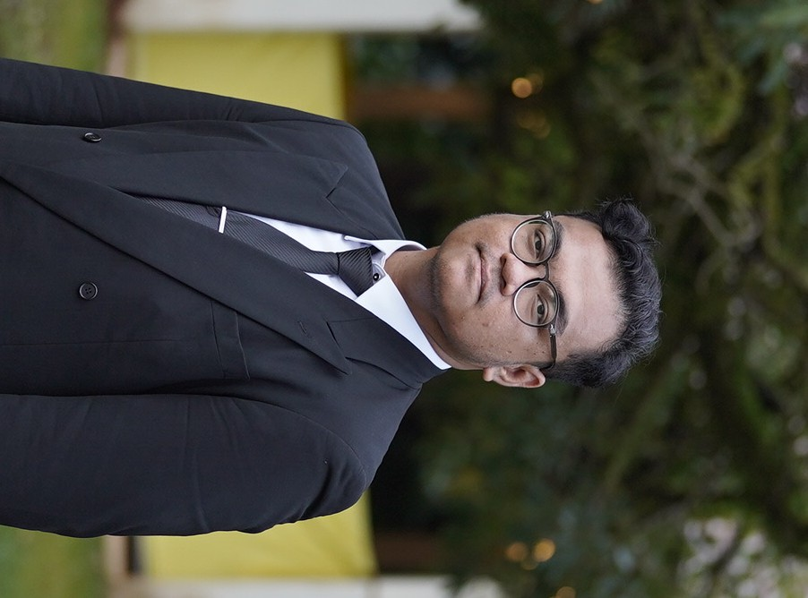

Resume

Professional Summary
My name is Fadil Naufal Wahas and I am a multidisciplinary engineer leveraging scientific programming to research mechanical systems, nuclear energy, and fluid dynamics. My work sits at the intersection of rigorous physical analyses and advanced computations, focusing on modeling complex thermal-hydraulic behaviors and optimizing energy systems.
Driven by a passion for solving high-stakes engineering challenges, I combine solid foundational scientific theorem with data-driven simulations to develop efficient, sustainable, clean, and systemic solutions for a better future.
Technical Scope
- Nuclear Energy: Neutronics analysis, system dynamics, and nuclear reactor safety and design
- Fluid Dynamics: Thermal-hydraulics modeling, computational fluid dynamics (CFD), and water management system
- Scientific Programming: Python, C++, MATLAB, and dedicated codes
Education
- Master of Engineering (M.T.) in Mechanical Engineering - Universitas Indonesia (2023 - 2026)
- Bachelor of Engineering (S.T.) in Nuclear Engineering - Universitas Gadjah Mada (2017 - 2022)
Specialization of Conversion and Conservation of Energy
Specialization of Nuclear Energy Technology
See my Publications for more details.
Work Experiences
-
P2M Universitas Indonesia, Depok
- Associate Consultant
May 2026 - Present
- Assessed, by field survey, the plumbing system of the newly built office building complex of an Indonesian bank.
- Prepared and presented a comprehensive plumbing system survey report to support the development of a maintenance guidebook.
- Composed the preventive and corrective maintenance guidebook of the plumbing system.
-
Universitas Indonesia, Depok
- Trainer of Python Programming
Feb 2024 - Feb 2025
- Led 20 participants on basic training of Python programming.
- Reviewed and debugged participant’s code on 5 modules.
- Contributed to the new syllabus materials including basic Artificial Neural Network and Machine Learning.
- Created a new plagiarism detection protocol for assignments using Python script.
- Examined and graded the participant’s work and report on each module of the training.
-
National Nuclear Energy Agency of Indonesia (BATAN), South Tangerang
- Intern of Reactor Operation Planning Division at Center of Multipurpose Reactor (PRSG)
Jan 2020 - Feb 2020
- Participated in pre and post-processing of reactor operations and Topaz irradiation process with 20 work hours inside the reactor building per week.
- Analyzed the reactivity changes in Topaz irradiation loading/unloading as a scientific report.
- Improved the reactor Safety Analysis Report data with 2 findings.
- Presented the results of analysis as an internship completion requirement.
-
Universitas Gadjah Mada, Sleman
- Laboratory Assistant of Computer Programming
Jan 2019 - Jul 2019
- Led 15 students on basic C++ programming language on Computer Programming practicum.
- Reviewed and debugged student code on 8 modules.
- Managed student data and communication flow among 3 classrooms.
- Examined and graded the student’s work and report on each module of the practicum.
Organizational and Volunteering Experiences
-
KKN-PPM UGM, Yogyakarta
- Volunteer
May 2020 - Aug 2020
- Initiated a seminar addressing the technology literacy issues for 25 people in one district of the village.
- Engineered a concept of sanitation station during Covid-19 pandemic for 50% less cost than a commercial one.
- Collaborated as a team composed of 20 students from different areas of expertise.
- Created technical report and documentation on the execution of volunteering activities.
-
Purna Paskibraka Indonesia, Jakarta
- Member
Aug 2015 - Present
- Organized and executed a leadership training camp with 150 attendees in the events division.
- Functioned in youth activities, 2 social events, 2 volunteering, 1 national and 1 international sporting events.
Trainings and Certifications
-
C++ Programming
- Saylor Academy
Jun 2026 • Certificate
- Fundamentals of C++ programming language and data structure
- Implemented object-oriented programming
- File I/O operations and directives
.jpg)
-
Risk Management In Technical Cooperation Projects
- International Atomic Energy Agency (IAEA) Open-LMS
Sep 2023 • Certificate
- Risk management system in technical projects
- Risk assessment, identification, and response
- Risk monitoring and reporting

-
Scientific Computing with Python
- freeCodeCamp.org
Jan 2023 • Certificate
- Fundamentals of Python, data structures, and object-oriented programming
- Scientific computation for engineering
- Data analysis, visualization, and database system

-
IAEA Safety Standards Overview
- International Atomic Energy Agency (IAEA) Open-LMS
Nov 2022 • Certificate
- Understanding of IAEA’s Safety Standards, principles, objectives, and its history
- Safety fundamentals, requirements, and guides (IAEA Safety Publication Series)
- IAEA Safety Standards development, establishment, evaluation, access, and implementation

Technical and Language Proficiencies
See my Portfolio for project details.
- Engineering in the fields of energy, mechanical, fluid dynamics, and nuclear
- Engineering system optimization
- Process engineering and scientific calculation using Python and MATLAB
- Design and safety of nuclear reactor using OpenMC, MCNP, and SCALE
- Fluid mechanics and modeling of Computational Fluid Dynamics (CFD) using OpenFOAM
- Technical design: Detailed Engineering Drawing (DED), Computer Aided Design (CAD), Piping and Instrumentation Diagram (P&ID), and As-Built Drawing (ABD) documentations
- Scientific and technical writing and documentation with office programs
- Python and C++ programming languages
- Data analysis, Artificial Neural Network (ANN) modeling, and Machine Learning
- Linux environment, GitHub repositories, and code distribution and development
- Languages:
- 🇬🇧 Professional working proficiency in English
- 🇮🇩 Fluent in Indonesian